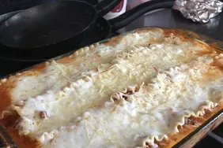

Lasagna

Description
Making perfect homemade lasagna doesn’t have to be tedious. This easy lasagna recipe comes together quickly with a relatively short ingredient list.
Ingredients
- 0.5 kg lean ground beef
- 1 spaghetti sauce jar
- 1 kg cottage cheese
- 3 cups shredded mozzarella cheese, divided
- 2 eggs
- ½ cup grated Parmesan cheese
- 2 teaspoons dried parsley
- salt to taste
- ground black pepper to taste
- 9 lasagna noodles
- ½ cup water
Steps
- Preheat the oven to 175 degrees Celsius.
- Heat a large skillet over medium-high heat. Cook and stir ground beef in the hot skillet until browned and crumbly, 8 to 10 minutes. Drain and discard grease. Stir in spaghetti sauce and simmer for 5 minutes.
- Combine cottage cheese, 2 cups of mozzarella cheese, eggs, 1/2 of the grated Parmesan cheese, dried parsley, salt, and pepper in a large bowl.
- Spread 3/4 cup of sauce in a 9x13-inch baking dish. Cover with 3 uncooked lasagna noodles, 1 3/4 cups of cheese mixture, and 1/4 cup sauce; repeat layers once more. Top with remaining 3 noodles, sauce, mozzarella, and Parmesan cheese. Pour 1/2 cup water along the edges of the dish. Cover tightly with aluminum foil.
- Bake in the preheated oven for 45 minutes. Uncover and bake for an additional 10 minutes. Let stand 10 minutes before serving.